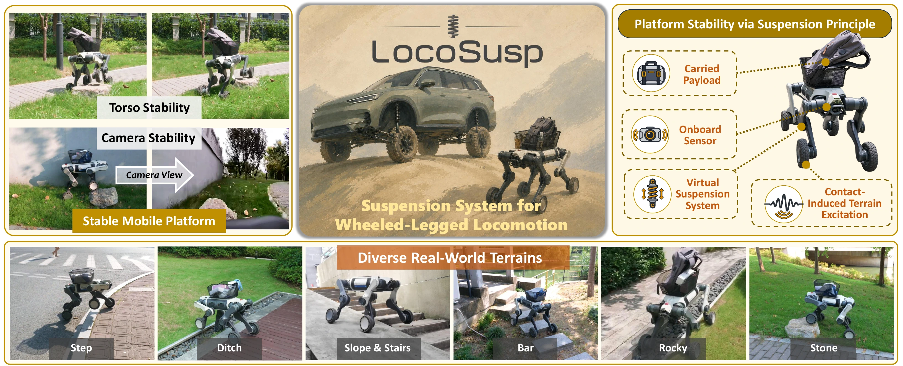
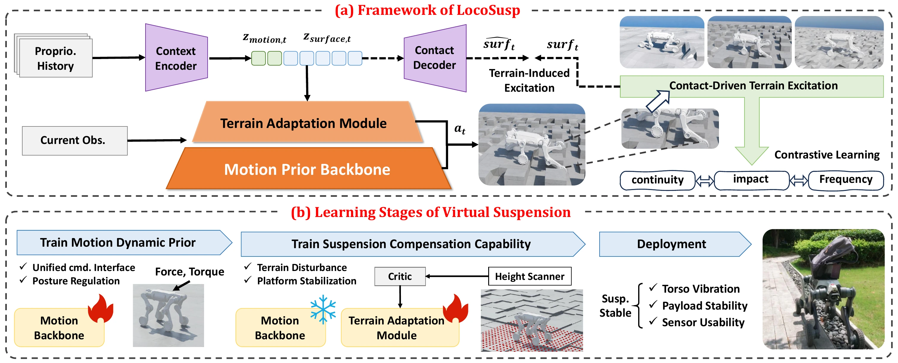
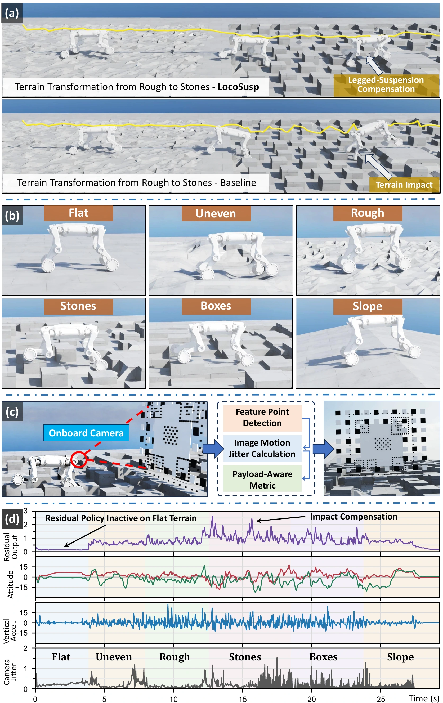
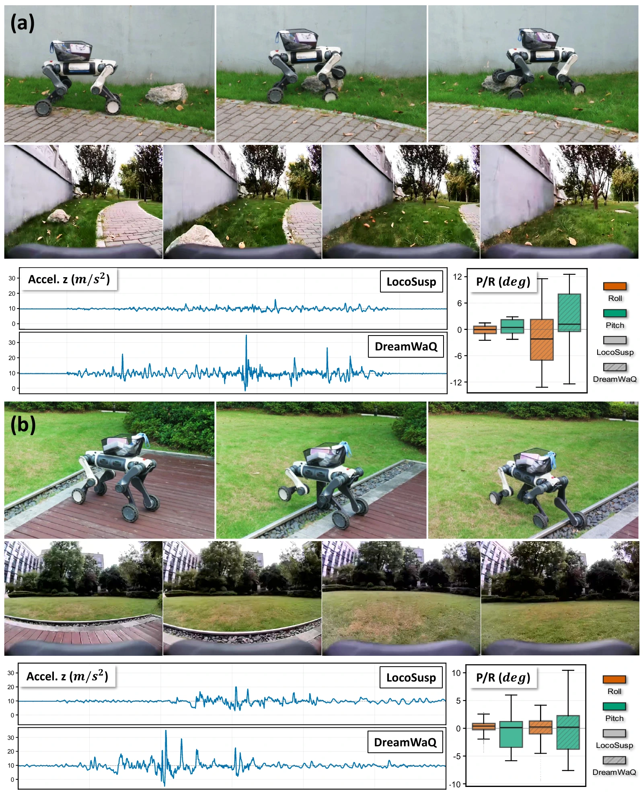

LocoSusp
Learning Virtual Suspension for
Stable Wheeled-Legged Mobile Platforms
ICRA 2027 Submission
Abstract
Wheeled-legged robots have achieved impressive terrain traversal capabilities, yet practical applications as mobile platforms require more than merely passing through challenging terrains. Terrain-induced vibration, impact, and body oscillation can significantly degrade onboard sensing and payload usability. We propose LocoSusp, a terrain-adaptive active suspension framework that reinterprets wheeled-legged robots as stable mobile platforms. LocoSusp exploits the suspension-like degrees of freedom provided by variable leg support and body configuration, and decomposes locomotion into a stability-preserving motion prior and terrain-dependent suspension adaptation. A contact-driven terrain excitation representation conditions residual compensation and support-height adjustment within a unified suspension policy. Experiments in simulation and on an M20 wheeled-legged robot demonstrate improved platform-level stability across diverse terrains while maintaining locomotion performance.

Suspension-oriented wheeled-legged locomotion
LocoSusp treats terrain as a dynamic excitation source rather than only a traversability label. A motion prior provides reliable command tracking and posture regulation, while terrain-conditioned suspension adaptation absorbs impacts, roughness, and terrain transitions through the robot's articulated leg support.

Simulation and platform stability
The evaluation focuses on platform-level behavior: vertical vibration attenuation, body attitude stability, camera stability, and payload usability. LocoSusp moves the objective from simply crossing terrain toward operating as a usable mobile sensing and payload platform.

Suspension intuition
Simulation demonstrations
Diverse terrain types
Real robot demonstration
Hardware demonstrations on the M20 wheeled-legged robot compare baseline behavior and LocoSusp under terrain disturbances.
